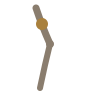

Bahvi Marma
Upper arm, the bicep
How to
Squeeze the muscle of your upper arm firmly between your thumb and fingers, working from just above the elbow up toward the shoulder. Knead gently as you go.
Benefits
- Eases tension in a muscle used constantly for carrying and lifting
- A simple, satisfying self-massage with no tools required
- Pairs well with a gentle arm shake afterward
Practice
Knead for 30-60 seconds per arm.

Get the Marma appFree, no ads, works offline
Google Play
General information, not medical advice. If you have a health condition or pain, talk to a doctor or qualified teacher first.